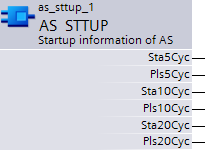

AS_STTUP: Automation station start-up information
Function
The function block AS_STTUP (FB459) permits the application start up to control and release the automation station in a targeted manner.
The block helps where specific actions are required at start up:
- Waiting for data that might not be immediately available at start up.
- Avoiding "competition" among actions during the start-up process, e.g. priorities.
- Actions specific to start up but after automation station start up.
Principle of operation
The controller provides information for automation station cycles.
- Output Sta5Cyc is set to "1" in the 5th cycle of the automation station and remains at "1" during the automation process.
- Output Pls5Cyc supplies a pulse with the 5th automation station cycle.
- Outputs Sta10Cyc, Pls10Cyc, Sta20Cyc and Pls20Cyc has the same function for automation station cycles 10 or 20.
The various outputs can be used in any manner by the application.

Pin description
The block possess only outputs:

Pin | E | Description |
Sta5Cyc | a | State 5 cycles after AS start up |
Pls5Cyc | a | Pulse 5 cycles after automation station start up |
Sta10Cyc | a | State 10 cycles after automation station start up |
Pls10Cyc | a | Pulse 10 cycles after automation station start up |
Sta20Cyc | a | State 20 cycles after automation station start up |
Pls20Cyc | a | Pulse 20 cycles after automation station start up |